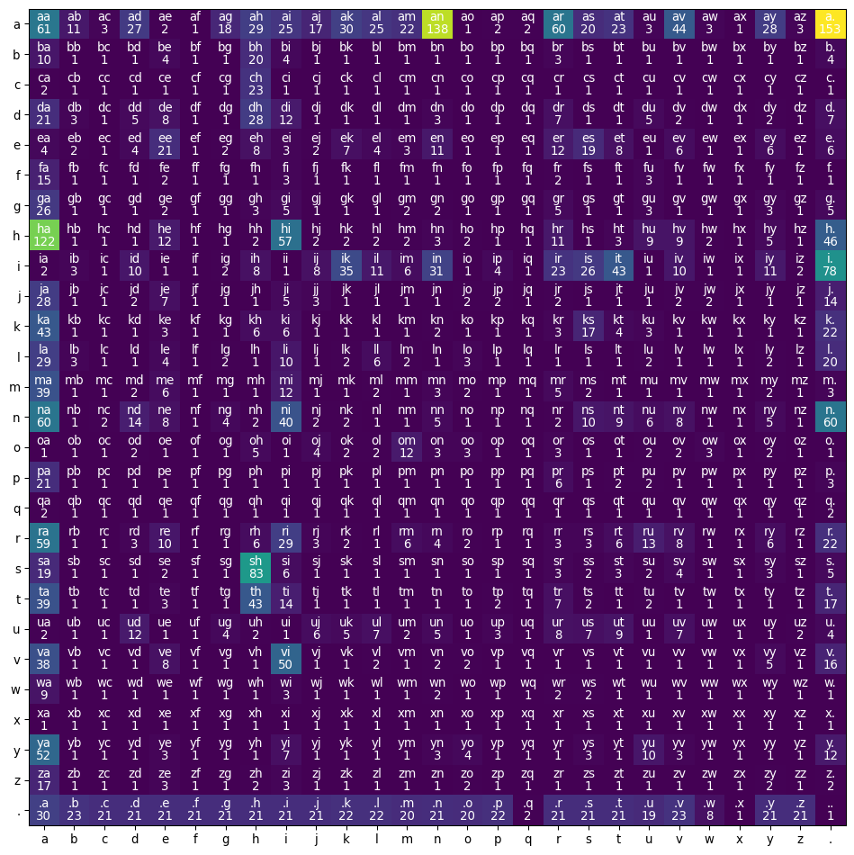
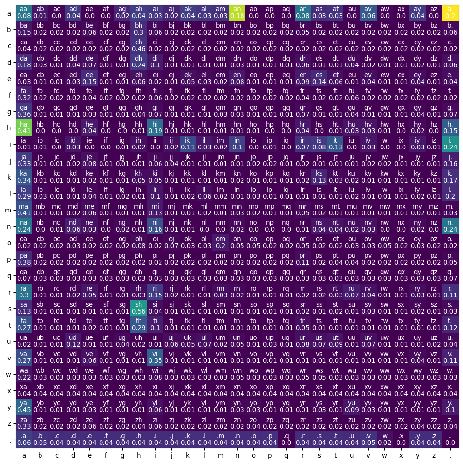

Following along lectures from CS224n and Andrei Karpathy’s Neural Networks: zero-to-hero series.
Start with a character level language model
Given a few characters, predict the next character in the sequence.
We will start with character-level models and eventually go to word-level models.
Start with bigram models that just predict a character given a single character
We should pay attention to characters that start and end words as well.
Also think about torch summing operations
Also think about sampling from multinomial distributions in torch
Think about broadcasting rules/broadcasting semantics in torch
Look at tutorials for broadcasting and practice it
Step 1: Train a bigram character level model based on frequencies of character occurences in a training dataset.
Step 2: Train a neural network to predict the next character based on a training dataset.
Get some data
Get some Indian names from a website and save them in a file called names.txt
import rewithopen("names.txt") asfile: text =file.read().splitlines()file.close()# Remove empty strings from the listtext = [x for x in text if x]# Remove the characters after '-'' as they are not part of the name and make all characters lowercase, and remove leading and training whitespaceswords = [word.split("-")[0].lower().strip() for word in text]words[:5], len(words), min(len(w) for w in words), max(len(w) for w in words)
Save the bigrams into a tensor so that we can later use pytorch
Since tensor has no labels, we will need a mapping from indices to characters and vice-versa
all_chars =list(set(char for word in words for char in word))# ANother way to do the aboveall_chars =list(set("".join(words)))#print(all_chars)len(all_chars)# Character x is missing and so is the end character "."all_chars.append("x")all_chars =sorted(all_chars)all_chars, len(all_chars)# stoi = {}stoi = {s:i for i,s inenumerate(all_chars)}stoi['.'] =26itos = {i:s for s,i in stoi.items()}stoi, itos
Now, initialize an empty tensor to save all the bigram counts
import torch# starting with a baseline of one to avoid zero counts.N = torch.ones((27,27), dtype = torch.int32)N.shapefor word in words: chs ='.'+word+'.'for ch1, ch2 inzip(chs, chs[1:]): ix1, ix2 = stoi[ch1], stoi[ch2] N[ix1, ix2] +=1#N
Visualize the matrix
import matplotlib.pyplot as pltfig, ax = plt.subplots(figsize = (10, 10))im = ax.imshow(N)ax.set_xticks(range(len(all_chars)+1), labels = all_chars+["."])ax.set_yticks(range(len(all_chars)+1), labels = all_chars+["."])# Loop over data dimensions and create text annotationsfor i inrange(27):for j inrange(27): text = ax.text(j, i, N[i, j].item(), ha ="center", va ="top", color ="white") text = ax.text(j, i, itos[i]+itos[j], ha ="center", va ="bottom", color ="white")fig.tight_layout()

Calculate probability of a character following abother character
We want to divide the original counts with sums of each row. We have to follow broadcasting semantics of tensors and have to understand what operations are happening in the background.
Np = N.float()# The dimension along which sum is computed is reduced to size 1 in output tensor# I want to sum across all rows. Therefore, I want sum along all rows in a single columnrowsum_tensor = Np.sum(dim =1, keepdim=True)rowsum_tensor.shape, rowsum_tensor# One row has a count of zero. Therefore, we will add a count of 1 to any value that has a value of zero, to avoid a final division by zeroNp = (Np/rowsum_tensor)fig, ax = plt.subplots(figsize = (10, 10))im = ax.imshow(N)ax.set_xticks(range(len(all_chars)+1), labels = all_chars+["."])ax.set_yticks(range(len(all_chars)+1), labels = all_chars+["."])# Loop over data dimensions and create text annotationsfor i inrange(27):for j inrange(27): text = ax.text(j, i, round(Np[i, j].item(),2), ha ="center", va ="top", color ="white") text = ax.text(j, i, itos[i]+itos[j], ha ="center", va ="bottom", color ="white")fig.tight_layout()

Make predictions based on calculated probabilities
We will make predictions by sampling from the calculated probabilities using torch.multinomial
Let’s test out the random number generator first to get a feel of the function
g = torch.Generator().manual_seed(347291378491) # fix the seedseq = torch.rand(3, generator = g) # generate three random numbers from uniform distribution between 0 and 1# Normalize the numbers to get a probability distributionseq = seq/sum(seq)print(seq)torch.multinomial(seq, 10, replacement=True, generator=g) # We should get index=0, i.e., the first number 50% of the times, and numbers at index 1 and 2 approximately 25% and 21% of the time, respectively.
tensor([0.5256, 0.2605, 0.2139])
tensor([2, 0, 0, 2, 0, 2, 0, 2, 0, 1])
gen = torch.Generator().manual_seed(347291378491)for _ inrange(20): char_list= ["."] ind = stoi["."]whileTrue: p = Np[ind]# If all characters were equally likely#p = torch.ones(27)/27.0 ind = torch.multinomial(input= p, num_samples =1, replacement =True, generator=gen).item()#print(ind)#print(sample_ind) sample_char = itos[ind] char_list.append(sample_char)if ind == stoi["."]:breakprint(''.join(char_list))
Evaluate the quality of the bigram model using a single number - loss
For 27 characters/tokesn, if everything was equally likely, we would expect probability of each bigram to be 0.0370. Anything above 4% means that we have learned something from the data.
If the model is trained well, then for the bigrams in the training data, the probability should be close to 1.
For probabilties, we use a quantity called likelihood, which is a product of all probabilities. When we have a good model, the product of these probabilities should be very high. In practice, we use log-likelihood, which is a sum of log of all probabilities.
Since log is a monotonic function, then if likelihood is high, log-likelihood should be high and negative of log-likelihood should be low.
Therefore, we can use negative log-likelihood as the loss function. For a very good model, negative log-likelihood will be low.
Typically we use an average of log-likelihood instead of raw log-likelihood, which can go from 0 to infinity.
log_likelihood =0.0n =0for word in words: chs ='.'+word+'.'for ch1, ch2 inzip(chs, chs[1:]): ix1, ix2 = stoi[ch1], stoi[ch2]# look at probability that bigram assigns to each bigram prob = Np[ix1,ix2] logprob = torch.log(prob) log_likelihood += logprob n +=1#print(f'{ch1}{ch2}: {prob:.4f} {logprob:.4f}')print(f'{log_likelihood=}')nll =-log_likelihood/nprint(f'Average neg log likelihood for character-level bigram model\n{nll.item()=:.4f}')
log_likelihood=tensor(-7733.9868)
Average neg log likelihood for character-level bigram model
nll.item()=2.2727